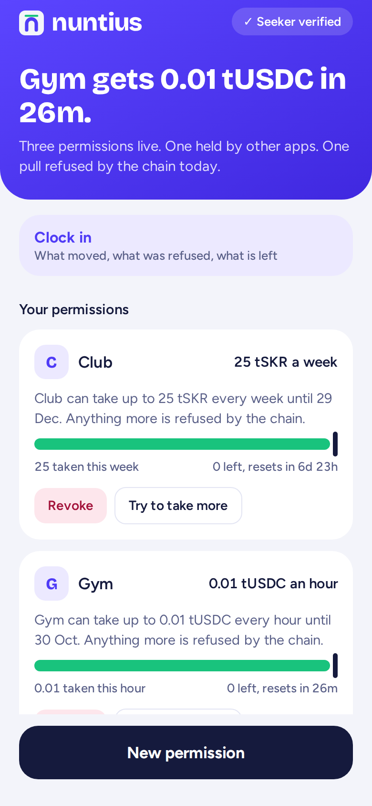
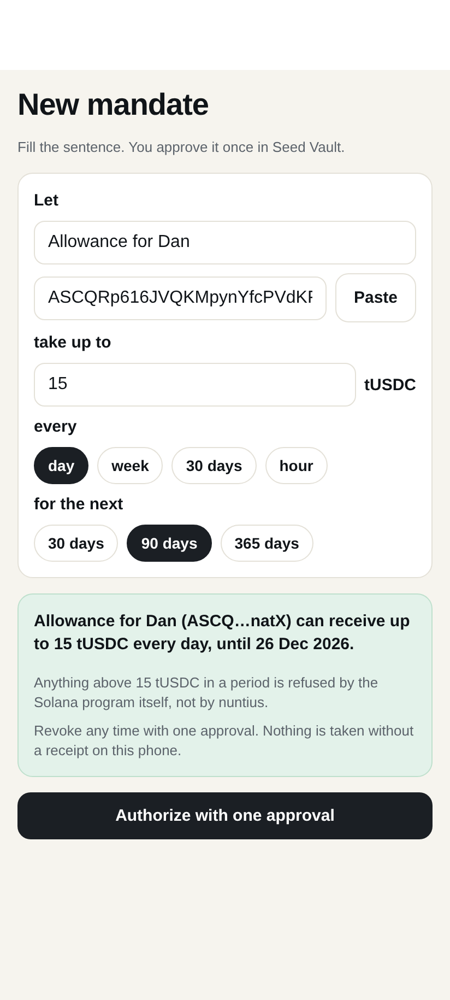
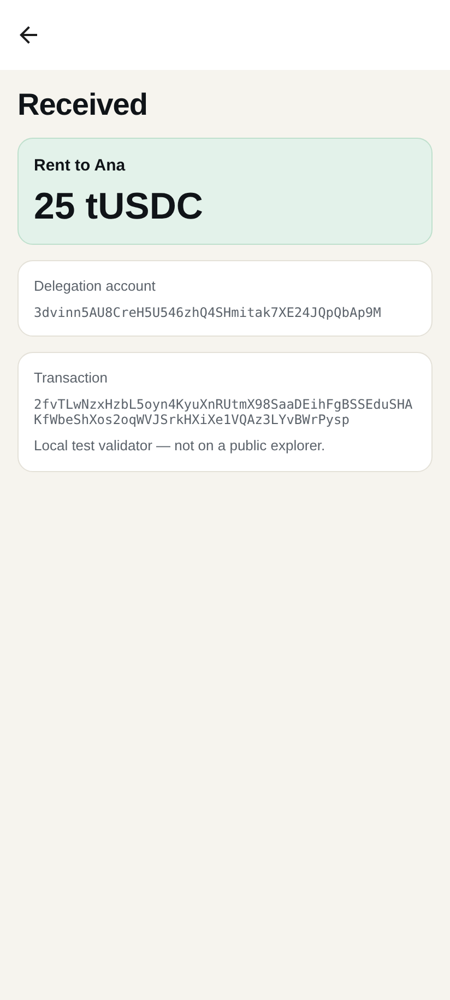
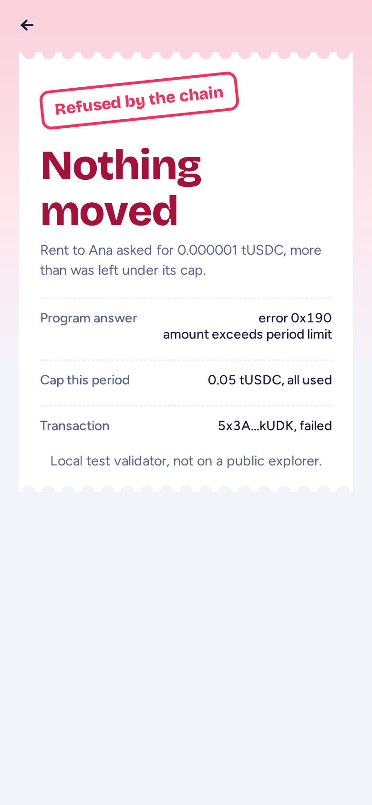
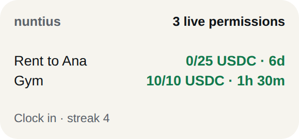
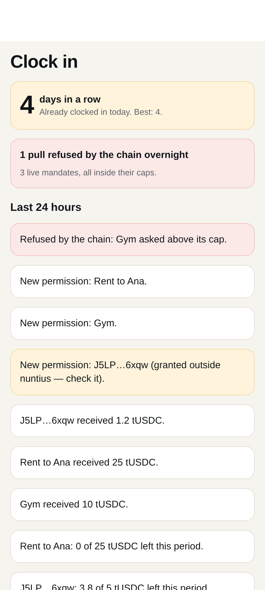

Grant it once in Seed Vault.
The chain holds the line.
A capped, revocable, recurring payment you approve once, with a push receipt for every pull, including the ones the chain refused.
The Foundation's Subscriptions program. Audited by Cantina. The same address on devnet and mainnet.
Every grant makes a program PDA the token account's delegate for the maximum amount. The per-period cap lives inside the program. nuntius caps the token approval at the lifetime total in the same transaction.
Plans, billing, collection. We found no wallet or app that shows the user these permissions, alerts when money moves, or ends them in one tap.
Sources: the program repository and CHANGELOG (read at commit 299dfea); twins survey in RESEARCH.md. "Merchant-side only" is a search result, not a census.
"Ana can receive up to 25 USDC every week, until 26 Dec." One Seed Vault approval. The first payment goes out at once, then one per period, with the phone in your pocket.
Every pull opens the on-chain proof. When anything asks above the cap, the program refuses it (0x190) and the phone says so.
All Subscriptions delegations on the wallet, to nuntius or to any other app. Each ends with one approval.




All three are the real app screens, rendered from its web build against a local validator (test mint tUSDC). On-device recording: see the demo video.
init_id, or
UNKNOWN_INIT_ID when the authority is created in the same slot (program 0.5.0, #206).
revokeDelegation +
revokeSubscriptionAuthority in one transaction when it is the last delegation on that
mint.
The localnet test asserts the grant's required signers are [owner], the delegation carries the
exact terms, and the token account delegate is the authority at 18446744073709551615.
Seed Vault signing the one-transaction grant on the Seeker, on mainnet. The two-transaction grant was signed there on 22 Sep. The one-transaction version is still to be recorded (see "Next").
| Step | Result | Signature |
|---|---|---|
| initSubscriptionAuthority and createRecurringDelegation | signed by Seed Vault, Seeker SM02E4060327059 | bBNbUgwh…qGS2Sks, 5r7YnGrb…FUGinugMw |
| transferRecurring ×4 | 17,000 base units moved; one signer, the delegatee | 59Zn57sY… 5kSbpeH6… 3utaq3gm… 41emXYEH… |
| Pull of 2× the cap | custom program error 0x190, landed | 3RpcCkkL…PmaZpWyR7 |
| One unit after the cap was used | 0x190, landed | 5ryxPMPj…oQ1TKAjsDpd |
| Period rolled (60 s) | pull allowed again, no new user signature | see README |
| revokeDelegation and revokeSubscriptionAuthority | both PDAs closed; delegate: none |
Vh2yr9VT…, 2doDFNXU… |
| Pull after revocation | fails: account gone | cfESoUjx…uSqzEzTtM5GPzm |
Cap 10,000 base units (0.01 USDC) per 60 s. The delegator ended 112,000 lamports down; both rents came back on revoke. Full signatures and Explorer links: README.md and JUDGE_GUIDE.md.
tests pass against solana-foundation/subscriptions @ 364a419, the commit its CHANGELOG names as the mainnet release, in a local validator (Agave 3.1.10).
sha256 31309d42…a30974648; scripts/localnet.sh reproduces it
init_id{"Custom":400}delegate: noneAlso: 10 app-logic tests; 31 of the server tests run without a validator; typecheck, lint and prettier clean. Whether the local binary is byte-identical to mainnet has not been measured yet.
One ledger row per (delegation, period start), holding the signature before sending. A replacement is built only once the old blockhash can no longer land.
Recorded as a refusal, pushed once, never retried. If the period's cap is already used, nothing is sent: no fees spent on a known no.
Exponential backoff with jitter. A closed delegation means revoked; past expiry means over. Each ends with one receipt.
12 unit tests on a simulated program (lost transactions, restarts, a send that throws after landing, max attempts). Logs are JSON with keys and tokens redacted.
Money moves while the app is closed. The push is the reason to look.
At the hour you choose: what moved overnight, what was refused, what is left. Opening it is the clock-in, and it keeps a streak.
Cap left and time to reset for each permission.


Amount per period (0x190, the program) and the lifetime total (SPL Token allowance); the delegatee is the only signer; whole-period resets; hard expiry; revoke closes it. Our server cannot raise any of it.
The token approval is capped at the lifetime total, so an upgrade of the program reaches at most what you approved in total. Another app's grant can lift the cap. The destination is bound by nuntius, not by the chain.
The one-transaction path (#206) is inside Cantina's audited baseline d6b3a5dc. The release commit is 8 commits past the audit-fix commit.
No secrets in the repo; SIWS nonces are single-use; sessions expire in 30 days; the server has 0 npm advisories. Full table in SECURITY.md.
| Standard audited program | Per-period cap | One Seed Vault approval | Receipt per pull | Other apps' permissions | Mainnet | |
|---|---|---|---|---|---|---|
| nuntius | yes | yes | yes (localnet-proven) | yes, incl. refused | yes | yes (22 Sep) |
| Veto (Clock In) | own Anchor program | total and daily limits | Seed Vault owner key | on-chain refusal records | no | devnet |
| Kin (Clock In) | plain SPL approve | per round | MWA | reminders | no | devnet |
| Loonie | yes | yes | web wallet | no | no | devnet |
| Explorer card | yes | read-only | — | no | read-only | yes |
From each project's public README, read on 27 Sep 2026 (RESEARCH.md). nuntius "Mainnet" is the 22 Sep life cycle (two approvals). The one-approval grant and receipts are proven on localnet and are still to be recorded on mainnet.
Mainnet life cycle from the phone (22 Sep). One-approval grant and revoke, executor, guard, and SKR next to USDC, tested against the real program. Tier gate, digest, streak and widget, unit-tested; every screen rendered on web to the design. Docs, threat model, judge guide.
Record the one-approval grant on mainnet from the Seeker. Pass the device checklist for the widget, receipts and digest. Publish the APK release.
dApp Store listing. Talk to the merchants on the standard. A disclosed fee on mandated flow, with the guard free for everyone. No users or revenue yet.
Grant once. The chain holds the line.